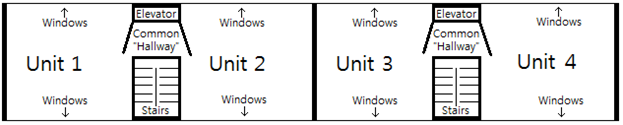
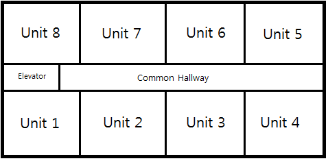

Konglish
As you know by now, Korean grammar is vastly different than English grammar. For English speakers, it is often easier to learn languages that have somewhat similar grammatical structure – like French, German or even Chinese (despite Chinese characters and pronunciation being difficult, Chinese grammar is very intuitive for an English speaker).
Some languages – most notably Japanese – have similar grammatical structures with Korean. This makes it “easier” for Japanese speakers to learn Korean (and vice-versa) because of the familiar organization.
That being said, English speakers are fortunate that many words from the English language have made their way over to Korean. This makes learning Korean a little bit easier for an English speaker – compared to say, a Russian speaker – because we can recognize words in Korean from our native language that speakers of other languages cannot.
Imagine if you were a Russian speaker with no understanding of English and wanted to learn Korean. If you found out that the Korean word for an “oven” is “오븐,” this would be another word that you would have to memorize.
As English speakers, we already know hundreds of words in Korean because many English words are used in Korean. I will call these “borrowed” English words. I typically do not list these borrowed words in the vocabulary of lessons because there is really no end to how many words you could take from English. Even if there is a Korean word for something, saying the English word with a Korean pronunciation will often be understood. Just sitting at my desk right now and looking around my room, I could use the following “borrowed” English words:
마우스 = mouse (computer mouse)
키보드 = keyboard
케이블 = cable
컴퓨터 = computer
스크린 = screen
폰 = phone
박스 = box
데오드란트 = deodorant
파일 = file
초콜릿 = chocolate
시리얼 = cereal
Like I said, that’s just looking at random things around me right now. I came up with a list of about 350 of these words that I have included at the end of this lesson.
These “borrowed” English words are taken directly from English and are being used in Korean. Every English speaker would know what “키보드” or “시리얼” means.
However, there are many words that – although originally taken from English – are not direct English words that are immediately recognizable or understandable for an English speaker. Either that or their meaning in Korean is not the same as their intended English meaning.
What’s funny is that because these words originate from English, Korean people assume that English people will understand them if they use these words. It’s possible, but if somebody has no experience with Korean people or Korean accents, an English speaker would probably not understand these words.
These are typically called “Konglish” words, and I would like to use this lesson to explain the meaning, purpose and usages of Konglish words that you will come across. I will introduce the words in the following format:
Korean word = (intended English word) = actual English meaning
I have separated this lesson into three sections, each contains a list of words:
1. A list of words borrowed from English where the meaning is different than the English usage
2. A list of words that are a combination of English and Korean
3. A list of words in Korean that have been directly Borrowed from English
Let’s get started with the first type of words!
Words borrowed from English where the meaning is different than the English usage
아파트 = (apart) = apartment building
Translating 아파트 simply to “apartment building” doesn’t do the word justice. There are many different types of apartment buildings in Korea. The word “아파트” is used to describe (typically) taller buildings that are long and flat (shaped like a rectangle). There are usually a few buildings stacked next to each other, and often lots of parking and apartment-owned land surrounding the buildings.
In English, “apartments” are usually rented, but in Korea (depending on the building and the landlord), you could own the unit as well. Families typically live in these apartments, and they are often the type of building that most Korean people would want to live in. To give you an idea, I live in a house (called a 주택) in Seoul. Very few people live in houses in Seoul because there is not enough land. I love where we live because the house and neighborhood are very old (which makes it cheap) and charming. To me, it is a really cool place, but my wife always dreams of moving to an 아파트 in the future.
Units in smaller apartment buildings (sometimes called “빌라” or “빌딩”) are typically rented (or owned) by younger people, people who don’t need a lot of space or people who don’t have enough money to buy or rent an 아파트. These types of places are often directly on a road with no extra land or parking.
Here are some examples of the word “아파트”:
이 동네에는 가족들이 많이 살고 있어서 아파트가 많아요
= There are a lot of families living in this neighborhood, so there are a lot of apartments
지금은 그냥 빌라에서 살고 있는데 나중에는 아파트에서 살았으면 좋겠어요
= Now I just live in a villa, but later I hope to live in an apartment
—————————————
오피스텔 = (office-tel) = regular western style apartment
This is another style of apartment in Korea. It is difficult to explain the difference between 아파트 and 오피스텔. Office-tels are usually designed more like apartments that we are used to in Western countries. They are usually very tall buildings and once you get off the elevator at the appropriate floor, there is usually a hallway with many rooms/units. An 아파트 is usually not like this. Usually 아파트 buildings have an elevator to a floor, and each floor only has two rooms on the floor – one on either side of the elevator. There isn’t usually a hallway, just a little square between the staircase, elevator, and doors to two units on either side. You can see what I mean in my picture that I drew of an “아파트” floor plan:
아파트 floor plan with four Units:

Imagine you live Unit 2. You don’t really have a neighbor to the left of you, because there is a staircase and “hallway” there. You will have a neighbor to the right of you, but you will probably never see them because they would enter the building in a completely different entrance. But notice that in both North and South directions, there is not another unit – just windows that face outside.
Office-tels, as I said, are usually structured like a hotel, where you come out of an elevator and have a line of units. You can see what I mean in my picture that I drew of an Office-tel floor plan:

Here, imagine you lived in Unit 2. You would have a neighbor to your left and right. You would also have a wall that faces to the hallway. Your final wall would be the only one with windows and facing outside.
Not all apartments and office-tels are are structured like that. This is just a generalization that I’m making, but I’ve found it to usually be true. Technically, the official difference because an 아파트 and 오피스텔 is that office-tels can also be used for business (in addition to people living in them).
Here are some examples:
우리 사무실은 오피스텔에 있어요 = Our office is in an office-tel
우리가 오피스텔에서 살아서 월세는 한 달에 백 만원이에요 = We live in an office-tel, so our rent is 1 million won per month
—————————————
원룸 = (one room) = studio apartment
투룸 = (two room) = two room apartment
쓰리룸 = (three room) = three room apartment
A 원룸 refers to a type of rental property with “one room” in it. These types of rooms are rarely in 아파트 or 오피스텔 buildings, and are usually in smaller “빌딩” or “빌라” buildings. A “원룸” literally just has one room (as in, a studio) in the apartment. Everything (except for the bathroom), including the kitchen and sleeping area is contained within the one room. It doesn’t refer to a one-bedroom apartment that has a living area and a separate room for the bedroom.
Confusingly, “투룸” and “쓰리룸” apartments usually include a living area plus two and three bedrooms respectively. For example, my house is a “쓰리룸,” and there is a living area/kitchen and three separate bedrooms (although one is the size of – and used as – a closet).
Here are some examples:
원룸에서 사는 사람들이 보통 대학생들이에요
= The people who live in studio apartments are usually university students
돈이 별로 없어서 원룸에서 살 수밖에 없어요
= I don’t have a lot of money, so I have no choice but to live in a studio apartment
—————————————
서비스 = (service) = complimentary things (usually food) when purchasing something
People working in Korean restaurants or stores will often give you complimentary food or items. For example, if you are having drinks with a group of friends, they might randomly bring you a couple of free side dishes (like French fries) to nibble on. When they give this to you, they would usually say “서비스입니다” or simply “서비스.”
Here are some examples:
우리가 식당에서 밥을 많이 시켜서 서비스를 받았어요
= We ordered so much food at the restaurant that we got some free food/stuff
만약 고객님이 차를 이 가격으로 구매하시면 저는 엔진오일을 서비스로 줄 겁니다
= If you buy this car at this price, I will give you engine oil for free
제가 그 식당에 자주 가지만 거기서 일하는 사람들이 친절하지도 않고 서비스도 안 줘서 더 이상 가고 싶지 않아요
= I go to that restaurant often, but the people working there aren’t nice and they never give me any free things, so I’m not going to go there anymore
—————————————
헬스 = (health) = the type of exercise one does at a fitness center (weight training)
If you work out at a fitness center (a gym), the type of exercise you are doing is “헬스.”
Here are some examples:
헬스를 무리하게 하면 다칠 수도 있어요
= If you work out too much, you can hurt yourself
저 사람이 헬스를 많이 해서 아주 건강해 보여요
= That person works out a lot so he looks very healthy
여자들이 자기 몸이 커지는 것을 보통 싫어해서 헬스를 하는 것 대신에 걷기나 달리기를 많이 해요
= Women usually don’t like it when their body gets big, so they walk or run instead of working out
—————————————
스킨십 = (skinship) = public displays of affection
Here are some examples:
내가 스킨십을 별로 안 좋아해서 손을 잡지 말자
= I don’t really like public displays of affection, so let’s not hold hands
그 커플이 스킨십을 많이 해서 사람들이 그들을 자꾸 쳐다봐요
= That couple often is affectionate in public, so people always stare at them
—————————————
PPT = Powerpoint slideshow
In some ways, this is a direct translation. “PPT” comes from the file extension of Powerpoint files (they all end in .ppt.) However, I would never say “PPT” in English to refer to this type of thing. Note that Korean people pronounce this as “피피티,” but in writing they typically write “PPT.” Here are some examples:
제가 PPT를 안 가져와서 프레젠테이션을 못 하겠어요
= I didn’t bring my Powerpoint slideshow, so I won’t be able to do my presentation
파일을 다 만들었으면 PPT를 컴퓨터에 넣어서 지금 발표를 준비하면 됩니다
= If you have finished making the file, you can put the Powerpoint presentation on the computer and start the presentation now
—————————————
프린트 = (print) = notes handed out at a school
When I prepare for my classes (I’m a science teacher), I often make handouts that I give to the students so they can follow along with me and make notes while I’m teaching. They call these things “프린트” in Korean. Here are some examples:
프린트에 보면 그 설명이 쓰여 있어요
= If you look at the handout, that explanation is written
선생님! 지난 주에 주셨던 프린트를 잃어버려서 혹시 한번 더 주시면 안 돼요?
= Teacher! I lost the handout you gave last week, so by chance can you give it to me again?
—————————————
햄 = (ham) = spam
This is kind of a joke, but it is actually true. Korean people eat spam pretty frequently (they put it in 김치찌개 or 김치볶음밥 often), and they refer to it as “ham” for some reason. I’m not sure how this food made its way into Korean delicacies because Korean food is often very fresh and healthy. I usually pass on food if it has “햄” in it, and Korean people often try to tell me that because it is meat it is good for me.
“햄” can also refer to our definition of ham as well, although Korean people would rarely (if ever) have a big roast ham that they would slice into.
Here are some examples:
김치찌개에 햄이 들어가서 저는 먹고 싶지 않아요
= There is “ham” in the kimchi jigae, so I don’t want to eat it
햄이 아주 짜서 많이 먹는 것이 건강에 안 좋아요
= “Ham” is really salty, so it is not healthy to eat it
—————————————
디스크 = (disc) = herniated disc in one’s back
This is quite similar to the English usage, but just saying “disc” doesn’t get you anywhere in English. If you say “I have a disc” in Korean, everybody would know what you mean. Here are some examples:
저는 디스크가 있어서 딱딱한 바닥에서 자야 돼요
= I have a herniated disk, so I need to sleep on a hard floor
그렇게 무거운 것을 계속 들다 보면 언젠가 디스크가 생길 거예요
= If you keep carrying heavy things like that, someday you’re going to get a herniated disc
—————————————
컨디션 = (condition) = used when telling people that one is sick
It is common for Korean people to say “컨디션이 안 좋다” to say that they are sick. In theory, you could say “My condition isn’t good” in English but it sounds unnatural. Here are some examples:
우리 아들은 오늘 컨디션이 안 좋아서 학교에 안 갈 거예요
= Our son is not feeling very good today, so he won’t go to school
저는 어제 컨디션이 별로 안 좋아서 밖에 나가지 않았어요
= I wasn’t feeling very good yesterday, so I didn’t go outside
—————————————
When having a shower, I would refer to the products I put in my hair as “shampoo” and conditioner.” An English speaker might not be able to decipher these words:
린스 = (rinse) = conditioner
린스를 안 하면 머리가 잘 엉켜요
= If you don’t use conditioner, your hair gets tangled easily
—————————————
MT (엠티) = (Membership Training) = going on a retreat with fellow students
In University, students of the same major or club will often go on retreats where they can get to know each other better. There might be activities planned, but most of these would be centered around drinking alcohol.
Here are some examples:
대학교에 있어서 제일 재미있는 것은 MT예요
= The most fun part of university is going on retreats with other students
이번 주말에 과학 전공 학생들이 다 엠티를 갈 거예요
= All of the science majors will go on a retreat this weekend
—————————————
CC (씨씨) = (Campus Couple) = two people dating at the same university
A couple that meets at university and starts dating would be called a “campus couple.”
Here are some examples:
그 커플은 대학교 때 CC였어요
= That couple was a “campus couple” in university
대학생이 되면 저는 CC가 되고 싶어요
= When I become a university student, I want to go out with a girl at my university
—————————————
팩 = (pack) = mask that people put on their face to improve their skin quality
These things are very popular in Korea. They are these thin, film-like pieces of paper (shaped like a face) that people put on their face and leave there for about ten minutes. I doubt it actually does anything.
Here are some examples:
피부가 엄청 안 좋아서 오늘 팩을 해야겠네요
= My skin is so bad, I’d better use a face pack today
일본 사람들에게 한국에서 만들어진 팩은 인기가 아주 많아요
= Face packs made in Korea are very popular among Japanese people
—————————————
실버타운 = (silvertown) = retirement complex for seniors
Here are some examples:
실버타운으로 이사하면 친구들을 쉽게 만날 수 있어요
= If you move to a retirement complex, you can meet friends easily
우리 할아버지가 실버타운에서 살아서 매일 골프도 치고 테니스도 쳐요
= Our grandfather lives in a retirement complex, so every day he plays golf and tennis
—————————————
셀카 = (sel(f)-ca(mera)) = taking a selfie (a picture of yourself)
Here are some examples:
가기 전에 우리 셀카 한번 찍자! = Let’s take a selfie before you go
여행을 혼자 할 때 셀카를 찍는 것이 유행이에요 = It’s a trend to take selfies when you travel alone
—————————————
미팅 = (meeting) = a group date where many people meet and rotate almost like “speed dating”
The whole idea of “팅” in the word is a little bit funny. The word “소개팅” is the word used for a (usually one-on-one) blind date. Here are some examples of 미팅 in use:
저는 저의 와이프를 미팅으로 만났어요
= I met my wife on a speed date
미팅을 많이 했지만 제 성격에 맞는 여자가 없었어요
= I’ve done a lot of speed dating, but I haven’t met a girl who matches with my personality
—————————————
사이다 = (cider) = Sprite or 7-Up tasting beverage
When I think of cider, I think of fruity alcoholic beverage that people drink near Christmas time. “Cider” in Korea refers to a drink that tastes like Sprite or 7-Up.
Here are some examples:
사이다 하나 주세요 = One “Cider” please
사이다의 맛은 Sprite맛과 거의 똑같아요 = Cider tastes almost exactly like Sprite
—————————————
펜션 = (pension) = A cottage like house in the countryside that people rent
A pension to me is something that people receive when they are older. Either that, or the top floor of an apartment building or hotel.
Korean people often rent houses in the countryside on their holidays or weekends. They’ll usually go to a pension, relax with their family/friends and have Korean-style barbeques.
Here are some examples:
이번 주말에 저는 친구들이랑 춘천에 있는 펜션에 갈 거예요
= I am going to a cottage in Chuncheon this weekend with my friends
네, 안녕하세요. 저는 이번 주에 펜션을 예약하고 싶은데요. 얼마예요?
= Yes, hello. I would like to reserve a cottage for this weekend. How much is it?
—————————————
내비게이션 = (navigation) = a GPS system that you can use while driving
I guess in English the word “navigation” could be used for this as well. When driving in a car, one of the features is to have a screen with a GPS that can tell you where to go. Of course, these days, it is also possible to have this function in a phone but it is usually still called “navigation” when in a car.
The verb 찍다 is usually used when saying that you will put the destination into the system. For example:
거기에 가는 길을 몰라서 내비게이선을 찍고 가야 될 거예요
= I don’t know how to get there, so I will have to put it into my GPS
It is also common to simplify this to simply “내비” for example:
거기에 가는 길을 몰라서 내비를 찍고 가야 될 거예요
= I don’t know the way to get there, so I’ll have to put it into my GPS
—————————————
노트북 = (notebook) = laptop
The term “notebook” could be used to refer to a laptop in English as well, but Korean people would almost exclusively use “노트북” to refer to one. For example:
제가 여행을 많이 해서 컴퓨터 대신에 노트북을 사는 게 더 좋을 것 같아요
= I travel a lot, so instead of a computer, it’ll probably be better if I buy a laptop
—————————————
런닝머신 = (running machine) = treadmill
Probably self-explanatory, but the word 런닝머신 is used to refer to a treadmill. For example:
저는 밖에서 뛰는 것보다 런닝머신이 더 좋아요
= I like running on a treadmill more than running outside
저는 집에서 쓸 수 있는 런닝머신을 사고 싶은데 안 쓸까 봐 사지 않았어요
= I’m wanting to buy a treadmill I can use at home, but am afraid I won’t use it, so haven’t bought one
—————————————
렌즈 = lens = contact lenses
The verb for putting in/wearing contact lenses is usually 끼다. For example:
그 여자가 렌즈를 껴서 눈이 파래요
= That girl is wearing contact lenses, so her eyes are blue
저는 안경을 쓰는 것이 불편해서 맨날 렌즈를 끼고 다녀요
= Wearing glasses is uncomfortable for me, so I go around every day wearing contacts. To me, glasses are uncomfortable, so I stick in contacts and get around each day
—————————————
파이팅 / 화이팅 = (fighting) = good luck!
This is often shouted to encourage somebody. Some situations where using this would be appropriate are:
– When trying to cheer somebody up
– When trying to rally the spirits of a team
– When a group of people (usually a team of some sort) take a picture
You wouldn’t normally use this word in a sentence. It is typically said on its own.
—————————————
풀옵션 = (full option) = furnished apartment
Most apartments for rent in Korea don’t come with furniture, but (especially in areas near universities) it is common to see the “full option” option available.
대학교 근처에 있는 아파트가 보통 풀옵션 방이 많아요
= There are usually many furnished apartments (available for rent) near universities
제가 가구가 하나도 없어서 아파트를 구하면 풀옵션으로 구해야 될 것 같아요
= I don’t have any furniture, so when I look for an apartment, I guess I’ll have to get a furnished one
—————————————
패딩 = (padding) = thick, padded winter jacket
“Padding” could refer to any type of padding in English. In Korean, this word refers to the big goose-down (or other similar fabric) winter jackets.
패딩을 입으면 안 추워요 = If you wear a thick, padded winter jacket, you won’t be cold
지난 겨울에는 이 자켓을 입었는데 너무 추워서 이번에는 패딩을 샀어요
= Last winter I wore this jacket but it was too cold, so this time I bought a thick, padded winter jacket
—————————————
개그 = gag = comedy
개그맨 = (gag man) = male comedian
개그우먼 = (gag woman) = comedienne
Korea doesn’t really have stand-up comedians that we are used to in Western countries. Instead, they have these men and women who make people laugh through performing skits (like Saturday Night Live) and other TV shows where they are put in various situations.
I work in a high school in Seoul, and there is always a few students per year who say that, when they get older, they want to become a “gag man” or “gag woman.”
One day I was watching TV show featuring one of these “gag women,” and there was a scene where she called a random person and explained who she was over the phone. She said:
안녕하세요 저는 개그우먼 김슬기라고 합니다
= Hello, I am Kim Seulgi, a comedienne
—————————————
코팅 = (coating) = laminate
If you have an important document, you might want to laminate it to protect it. In Korean, they would say to put a “coating” onto it. For example:
선생님! 써 주신 편지가 너무 소중해서 코팅해 놓을 거예요!
= Teacher! The letter that you wrote for me is so precious, so I’m going to laminate it
—————————————
에이드 = (ade) = carbonated fruit drinks
It is very common in Korea for (typically Western) restaurants to offer a type of drink called “에이드.” It is usually some sort of fruit-imitation flavoring with carbonation. Some examples would include:
자몽 에이드 = grapefruit ade
레몬 에이드 = lemonade
오렌지 에이드 = orange ade
For example:
어떤 맛 에이드를 시키겠습니까?
= Which flavor of fruit drink would you like to order?
식사를 두 개 시키면 에이드를 한 잔 서비스로 드려요
= If you order two meals, you get a free glass of fruit drink as “service”
—————————————
치킨 = chicken = fried chicken
One of the most popular “guilty pleasures” of Korean people is fried chicken. It is typically enjoyed with beer among friends, or late at night with one’s family. You can get the chicken with the bones, or without the bones, called “순살 치킨.” The three main flavors you can get are:
후라이드 = fried (no sauce)
양념 = sweet/spicy sauce
간장 = soy sauce
The word “닭” in Korean is used to refer to the actual chicken animal, or the meat of a chicken if used in regular cooking. “치킨” is mostly used to refer to fried chicken. For example:
오늘 밤 치킨 먹자! = Let’s eat fried chicken tonight!
제가 제일 좋아하는 치킨 종류는 양념 순살이에요 = My favorite type of fried chicken is boneless with sweet/spicy sauce
—————————————
컨닝 = (cunning) = cheating on an exam
컨닝 is most commonly used in a school environment when a student cheats on an exam. It is used to refer to the action of looking at somebody else’s test paper. For example:
시험을 볼 때 컨닝을 하면 안 돼요 = When you take an exam, you shouldn’t cheat
제가 고등학교 때 컨닝을 많이 했어요 = I cheated a lot when I was in high school
————————————–
오픈카 = (open car) = convertible
It is easy to see how Korean people came up with this word. “Open car!” Why don’t we call it that?
차를 빌릴 때 오픈카를 달라고 하자 = When we rent a car, let’s ask them to give us a convertible
캐나다가 아주 추워서 오픈카를 자주 못 봐요 = Canada is very cold, so you don’t see convertibles often
—————————————
멀티룸 = multi-room = a room with many things for kids to hang out in
In Canada, I grew up playing with my friends at their houses or at my house. In Korea, it is rare for teenagers to go to each other’s houses to “play.” Rather, they often go to common places like arcades or coffee shops. One type of place that is common for young Korean people to go to is called a “멀티룸” or “멀티방.”
You can usually rent a “room” about the size of a king-size bed. The room itself isn’t usually fully enclosed, but rather is separated from other rooms by partitions or other types of walls that don’t fully reach the ceiling. In the room you’ll find things like a TV with video games, movies and TV shows, books, comic books, board games, any other entertainment items. For example:
오늘 날씨가 너무 더워서 멀티룸에 가서 놀자
= It is so hot today, so let’s go to a multi-room and play
Words that are a combination of English and Korean
헬기 = helicopter
A combination of the English word “hell(icopter)” and “기” which refers to some sort of a machine. The 한자 character for “기” is 機 and is often placed after a noun to specify this. Here are other words ending in “기:”
전화기 = telephone
선풍기 = electric fan
거기에 가려면 헬기로 가야 돼요 = If you want to go there, you need to go by helicopter
—————————————
믹서기 = blender
Here is another example of a machine-related word ending in –기. A combination of the English word “mixer” and this suffix to represent that the word refers to a “mixing machine.” For example:
믹서기가 없으면 김치를 만들 수 없어요 = If you don’t have a blender, you can’t make kimchi
땅콩버터를 집에서 만들고 싶으면 그냥 땅콩을 믹서기에 넣고 바로 갈면 돼요
= If you want to make peanut butter at home, you just need to put peanuts in a blender and blend them
—————————————
드럼세탁기 = drum washing machine
A combination of the English word “drum” and Korean word “세탁기” (washing machine). This refers to the style of washing machine that is shaped like a bass drum – where the door is located on the front of the machine. The type of washing machine where the door is placed on the top is called a “통돌이세탁기.”
드럼세탁기에는 문이 기계 앞쪽에 있고 통돌이세탁기에는 문이 기계 위쪽에 있어요
= The door to a drum washing machine is in the front, and the door to a tongdol washing machine is on the top
—————————————
골프장 = golf course
A combination of the English word “golf” and “장” which designates a place/location. The 한자 character for “장” is 場 and is often placed after a noun to specify this. Here are other words ending in “장:”
운동장 = exercise place (exercise field)
직장 = place of work
주차장 = parking lot
한국은 땅이 넓지 않아서 골프장이 많지 않기 때문에 골프를 치는 것이 비싸요
= Since Korea doesn’t have a lot of land, there aren’t many golf courses, which makes playing golf expensive
—————————————
트레이닝복 = training clothes
A combination of the English word “training” and “복” which designates a clothing. The 한자 character for “복” is 服and is often placed after a noun to specify this. Here are other words ending in “복:”
운동복 = exercise clothes
한복 = Korean traditional clothes
제가 곧 운동을 많이 할 거라서 우선 트레이닝복을 사야 돼요
= Since I’ll soon be doing a lot of exercise, I first have to buy some training clothes
—————————————
셀카봉 = selfie stick
A combination of “selfie” and “봉” which refers to some sort of stick. The 한자 character for “봉” is 棒.
우리가 한번 셀카봉으로 사진을 찍는 게 어때요?
= How about we take a selfie with the selfie stick?
—————————————
싱크대 = sink
A combination of the English word “sink” and “대” which refers to some sort desk. The 한자 character for “대” is 臺 and is often placed after a noun to specify this. Here are other words ending in “대:”
작업대 = worktable, workbench
독서대 = reading desk
급수대 = water fountain
설거지를 하고 나서 싱크대를 한번 닦는 것이 중요해요
= It is important to wipe the sink once after you are finished washing the dishes
—————————————
노잼 = For something not to be funny
“노잼” is a new word that kids say these days. “잼” is an abbreviation of “재미” meaning “fun.” “노” is the direct usage of the English word “no.” Therefore, when one says “노잼” they are indicating that something is not funny. For example:
그 수업은 진짜 노잼이었어! = That class really wasn’t fun!
—————————————
M자 (엠자) = widow’s peak (receding hairline)
When you have a receding hairline, the shape of the hairline looks like an “M.” “자” is used to indicate that it is the shape of the “M.” Here are some examples:
저는 어렸을 때부터 머리에 M자가 있었어요
= I’ve had a widow’s peak ever since I was younger
요즘에 저의 머리에 M자가 점점 커지고 있어요
= These days, my widow’s peak has been gradually getting bigger
—————————————
팀장 = (team jang) = team boss, team leader
There is a lot of hierarchy in Korean companies and organizations. Each rung you go up the ladder, there is another “boss.” Some companies might not have all of these types of bosses, as it is highly dependent on the company. My wife once worked for a company that had the positions ordered like this:
The English translations are nonsense, in my opinion. It’s more important to know (depending on the company) where the positions fall in relation to one-another.
대리님 = assistant manager
과장님 = manager
부장님 = boss
이사님 = director
팀장님 = team leader
대표님 = head representative
사장님 = owner
“팀장” is a combination of the English word “team” and “장” which refers to the boss or leader of something. The 한자 character for “장” is長 and is often placed after a noun to specify this. Here are other words ending in “장:”
부장 = boss
시장 = mayor
교장 = principal
선장 = captain of a ship
—————————————
왕팬 (wang-fan) = a big fan
왕 means “king.” The 한자 character for 왕 (王) is very recognizable because of its simplicity. By saying “왕팬,” you can refer to somebody who is the “king of fans” of a celebrity.
Here are some examples:
저는 유재석의 왕팬이에요 = I am the biggest fan of 유재석.
Just an additional note about 王 – in addition to referring to nice abs as “식스팩,” it is also common for Korean people to refer to it as “왕자” because of its similarity to a six-pack of abs.
List of Words in Korean that have been Directly Borrowed from English
The following is a list of words I created where the English meaning of the word is the same as the meaning when used in Korean. For two months, I wrote down every one of these words that came to my mind. It’s essentially impossible to include every word in this list, simply because almost every English word can be said in Korean to have the same meaning. This is especially true with technical jargon in various fields.
Nonetheless, here is a massive list, organized in (Korean) alphabetical order:
가스 = gas
가스레인지 = gas range (stove)
가이드 = guide
갤러리 = gallery
거즈 = gauze
게스트 = guest
게임 = game
골 = goal
골키퍼 = goal keeper
골프 = golf
그램 = gram
글라스 = glass
나노미터 = nanometer
네트워크 = network
넥타이 = necktie
노트 = note
뉴런 = neuron
다운로드 = download
다이빙 = diving
다이아 = diamond
다이아몬드 = diamond
다크 = dark
더블 = double
데이터 = data
데이터베이스 = database
데이트 = date
드라마 = drama
드라이버 = driver
드라이어 = dryer
드립 = drip
디너 = dinner
디럭스 = deluxe
디스플레이 = display
디자인 = design
디저트 = desert
디젤 = diesel
디지털 = digital
땡큐 = thank you
라디오 = radio
라벤더 = lavender
라벨 = label
라식 = lasic surgery
라운지 = lounge
라이벌 = rival
라이스 = rice
라이터 = writer
라인 = line
라자냐 = lasagna
락 = rock (type of music)
락커 = locker
락커룸 = locker room
랍스터 = lobster
랩 = wrap
랭귀지 = language
러브 = love
럭비 = rugby
럭비공 = rugby ball
럭셔리 = luxury
런닝 = running
런지 = lunge
런치 = lunch
레저 = leisure
로고 = logo
로데오 = rodeo
로드 = road
로또 = lotto
로맨틱 = romantic
로밍 = roaming
로봇 = robot
로비 = lobby
로스팅 = roasting
로즈 = rose
록밴드 = rock band
록클라이밍 = rock climbing
롤러코스터 = roller coaster
롤 = roll
룰렛 = roulette
룸 = room
리더 = leader
리모콘 = remote control
리뷰 = review
리셉션 = reception
리스트 = list
리얼 = real
립 = lip
립스틱 = lipstick
링 = ring
링크 = link
마사지 = massage
마스크 = mask
마요네즈 = mayonnaise
마이너스 = minus
마이크 = microphone
마일 = mile
마일드 = mild
마일리지 = mileage points
마켓 = market
마트 = mart
매니저 = manager
매니큐어 = manicure
매트리스 = mattress
머그컵 = mug
머신 = machine
머플러 = muffler, scarf
메트로 = metro
모니터 = monitor
모터 = motor
모텔 = motel
미니 = mini
미디어 = media
미션 = mission
민트 = mint
밀크 = milk
바코드 = bar code
발렛 = ballet
배터리 = battery
백 = bag
백핸드 = back-hand
밴드 = band
버거 = burger
버건디 = burgundy
버터 = butter
버튼 = button
버퍼링 = buffering/loading
베란다 = veranda
베스트 = best
베이커리 = bakery
벨 = bell
벨브 = valve
벨트 = belt
보드 = board
보디 = body
보디가드 = body guard
보디랭귀지 = body language
보디빌딩 = body building
보이 = boy
보일러 = boiler
본드 = bond, glue
볼륨 = volume
부츠 = boots
뷔페 = buffet
브라 = bra
브라보 = bravo
브랜드 = brand
브러시 = brush
브런치 = brunch
브레이크 = brake
브로치 = broach
블로그 = blog
비닐 = plastic bag, vinyl
비디오 = video
비디오게임 = video game
비지니스 = business
빌딩 = building
빌라 = villa
사이트 = site
샌드위치 = sandwich
샴푸 = shampoo
샷 = shot
서머타임 = daylight savings time
세트 = set
센터 = center
셔틀 = shuttle
소다 = soda
쇼핑 = shopping
쇼핑몰 = shopping mall
숏 = shot
스마트 = smart
스마트폰 = smart phone
스모그 = smog
스무디 = smoothie
스웨터 = sweater
스위치 = switch
스카이 = sky
스카이다이빙 = sky diving
스카프 = scarf
스케일링 = scaling (at a dentist)
스케줄 = schedule
스퀘어 = square
스크린 = screen
스크린도어 = screen door
스키 = ski
스타 = star
스타디움 = stadium
스타트 = start
스탠드 = stand
스토리 = story
스톱 = stop
스티커 = sticker
스파게티 = spaghetti
스파크 = spark
스페어 = spare
스포츠 = sport
수프 = soup
스프레이 = spray
스피드 = speed
스피드퀴즈 = speed quiz
시리얼 = cereal
시리즈 = series
시스템 = system
쓰리디 = three-D
아몬드 = almond
아바타 = avatar
아보카도 = avacado
아이돌 = idol groups
아카데미 = academy
아카펠라 = acapella
아케이드 = arcade
아트 = art
아트홀 = art hall
알레르기 = allergy
알파 = alpha
알파벳 = alphabet
애플리케이션 = application
액션 = action
앱 = app
업데이트 = update
업로드 = upload
에너지 = energy
에스컬레이터 = escalator
에어로빅 = aerobics
에어백 = air bag
에어컨 = air conditioning
에티켓 = etiquette
엑스레이 = xray
엔터테인먼트 = entertainment
엘리베이터 = elevator
오토매틱 = automatic
오토바이 = motorcycle
오픈 = open
요구르트 = yogurt
우먼 = woman
워터파크 = water park
원피스 = one piece (dress)
월드 = world
웰빙 = well being
웹 = web
이메일 = email
이어폰 = earphone
인테리어 = interior
인프라 = infrastructure
잉크 = ink
재즈 = jazz
잼 = jam
제로 = zero
젤리 = jelly
좀비 = zombie
지퍼 = zipper
집라인 = zip-line
체리 = cherry
체크 = check
체크인 = check-in
초코 = chocolate
초코렛 = chocolate
치즈 = cheese
칠리소스 = chili sauce
칩 = chip
카레 = curry
카메라 = camera
카운슬러 = counsellor
카운슬링 = counselling
카운터 = counter
카트 = cart
카페 = cafe
카페인 = caffeine
캐리어 = suitcase
캐리커처 = caricature
캐치 = catch
캔디 = candy
캡슐 = capsule
커브 = curve
컨디셔너 = conditioner
컬러 = color
케이블 = cable
케이블카 = cable car
케이스 = case
케첩 = ketchup
코너 = corner
코너킥 = corner kick
코브라 = cobra
코스 = course
코어 = core
코코아 = cocoa
콘 = cone
콘돔 = condom
콘센트 = outlet
콘셉트 = concept
콘크리트 = concrete
콘텐츠 = contents
콤플렉스 = complex
쿠폰 = coupon
퀴즈 = quiz
크리넥스 = kleenex
크림 = cream
클래식 = classic
클럽 = club
클렌저 = cleanser
클렌징 = cleansing
클렌징크림 = cleansing cream
클리닉 = clinic
클리언스 = clearance
키보드 = keyboard
킹 = king
타운 = town
타워 = tower
타월 = towel
타이밍 = timing
태그 = tag
태닝 = tanning
탤런트 = talent
탱크 = tank
터치 = touch
텀블러 = tumbler
테러 = terror
테마 = theme
토너 = toner
토스터 = toaster
토스트 = toast
토털 = total
트랙 = track
트레이너 = trainer
트레이닝 = training
트레이드 = trade
티백 = tea bag
티슈 = tissue
티켓 = ticket
파마 = perm
파워 = power
파이프 = pipe
파티 = party
파파라치 = paparazzi
파파야 = papaya
팝송 = pop song
패스 = pass
패치 = patch
팩스 = fax
포인트 = point
포켓 = pocket
포켓볼 = pocket pool
포크 = fork
포테이토 = potato
포토 = photo
포토샵 = photoshop
폰 = phone
폴더 = folder
폴라로이드 = polaroid
푸드코트 = food court
프로 = pro
프로게이머 = pro-gamer
프로그래머 = programmer
프로그램 = program
프로젝트 = project
프로페셔널 = professional
프로필 = profile
프리미엄 = premium
플라스틱 = plastic
플라자 = plaza
플러그 = plug
플러스 = plus
플레이어 = player
필름 = film
필터 = filter
핑크 = pink
하모니 = harmony
핸드백 = hand bag
핸드볼 = hand ball
핸들 = handle
헤어 = hair
헤어스타일 = hairstyle
헤어핀 = hairpin
헬륨 = helium
헬멧 = helmet
헬스클럽 = health club
호일 = tin foil
홀 = hall
홀더 = holder
후레쉬 = fresh
히어로 = hero
히터 = heater
힌트 = hint
힐 = heel